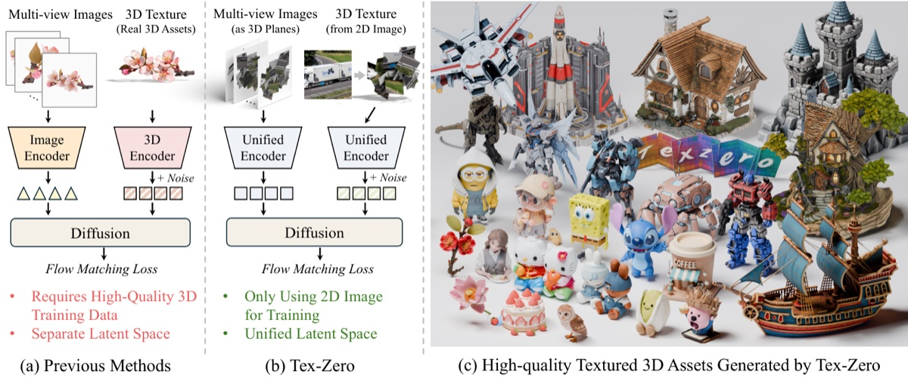

Ph.D. Student · MMLab, The Chinese University of Hong Kong
RESEARCH OVERVIEW

This is an illustrative research entry. Replace it with your paper’s title, authors, abstract, and links.
Find me on WeChat
Please enable JavaScript to display profile details and research entries. You can edit the homepage content in profile.js.